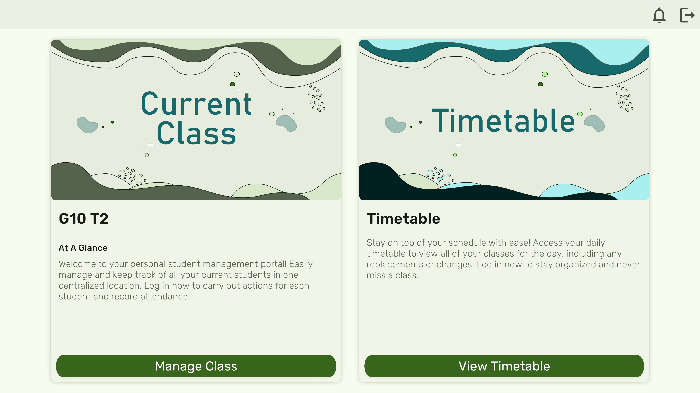

Welcome to the Admin Guide section of the application! This guide will provide you with step-by-step instructions on how to navigate and effectively use the features available for managing the entire school and accessing important information.
Logging In (First Time Only)
Open the application and click on the "Login" button.
Enter your provided admin credentials (username and password) to access your account.
If this is your first time logging in, follow the on-screen instructions to complete the setup process.
Homepage Navigation

On the homepage, you'll find a range of features designed to help you manage attendance and timetables for the entire school.
Attendance Management
Click on the "Manage" option under "School Roster."
Here, you'll see a list of all students in the school, organized by class and section.
To mark a student as absent or late, uncheck the corresponding checkbox next to their name, based on the current period.
Utilize the search bar to quickly find specific students by entering their names.
If you need to generate attendance reports, select a student to view their individual attendance history and reports.
Timetable Viewing and Replacements
On the homepage, locate the "View Timetable" option.
Click on it to access the weekly timetable for all teachers.
You can view the schedules for each day of the week, including class timings and subjects.
To assign replacements, contact the respective teachers and adjust the timetable accordingly.
Tips for Effective Use
Regularly update attendance to maintain accurate records for the entire school.
Use the search bar to efficiently manage student attendance records.
Coordinate teacher replacements as needed by adjusting the timetable.
Remember, this guide provides an overview of the key features available in the Admin Guide section. If you have any questions or encounter any issues while using the application, don't hesitate to contact our support team for assistance.
Enjoy efficiently managing attendance and timetables for the entire school with our application!
Teacher Guide
Welcome to the Teacher Guide section of the application! This guide will walk you through the steps to effectively use the features available for managing your class and accessing important information.
Logging In (First Time Only)
Open the application and click on the "Login" button.
Enter your provided credentials (username and password) to access your account.
Homepage Navigation
On the homepage, you'll find a range of features designed to help you manage your class efficiently.
Attendance Management
Click on the "Manage Class" option under "Current Class."
Here, you'll see a list of students in your class along with their attendance status.
To mark a student as present or absent, simply check or uncheck the corresponding box next to their name.
To load the full class list, click on the eye icon.
Utilize the search bar to quickly find specific students by entering their names.
If you need to generate attendance reports, select a student to view their individual attendance history.
Timetable Viewing
On the homepage, locate the "View Timetable" option.
Click on it to access your weekly timetable.
Here, you'll be able to view your schedule for each day of the week, including class timings and subjects.
Tips for Effective Use
Keep your attendance records up to date to ensure accurate reporting.
Utilize the search bar to quickly find specific students within your class.
Regularly check your weekly timetable to stay organized and prepared for your classes.
Remember, this guide provides an overview of the key features available in the Teacher Guide section. If you have any questions or encounter any issues while using the application, feel free to reach out to our support team for assistance.
Happy teaching and managing your class with our application!
Parent Guide
Welcome to the Parental Guide section of the application! This guide will help you navigate and utilize the features available to keep track of your child's attendance and behavior reports.
Logging In
To log in, you'll need your child's student ID (found in their bus pass) and a 3 alpha-numeric code provided by the school admin.
Homepage Navigation
On the homepage, you'll find features that allow you to stay informed about your child's attendance and behavior.
Viewing Attendance
Click on "View Attendance" to access your child's attendance records.
Here, you can view the attendance for each day and the corresponding status (present, absent, or late).
Use the search option to find attendance records for a specific day.
Viewing Behavior Reports
On the homepage, select "View Reports" to access behavior reports for your child.
Tips for Effective Use
Keep your child's student ID and the login code secure to ensure their privacy.
Regularly check your child's attendance records to stay informed about their school attendance.
Review behavior reports to stay updated on your child's conduct at school.
Remember, this guide provides an overview of the key features available in the Parental Guide section. If you have any questions or encounter any issues while using the application, feel free to reach out to our support team for assistance.
Stay connected and engaged with your child's school journey using our application!
Student Guide
Welcome to the Student Guide section of the application! This guide will provide you with instructions on how to use the student portal to communicate with the school admin.
Login to Student Portal
Select "Login to Student Portal."
Choose your school from the list.
Enter your phone number associated with the school.
Select "Login."
Submit Messages
Upon logging in, you'll be presented with a text box where you can write suggestions, share concerns, or communicate with the school admin.
Your message is semi-anonymous, meaning only the school admin can access it. They can see your phone number and the message you submit, ensuring your privacy.
Tips for Effective Communication
Use this platform to voice your thoughts, suggestions, or concerns in a respectful manner.
Feel free to reach out for support or guidance whenever you need it.
Your privacy is respected, as only the school admin can view your message along with your phone number.
Remember, this guide provides an overview of how to use the Student Guide section. If you have any questions or face any difficulties while using the application, don't hesitate to contact your school admin for assistance.
Stay connected and engaged with your school community using our secure and confidential messaging platform!